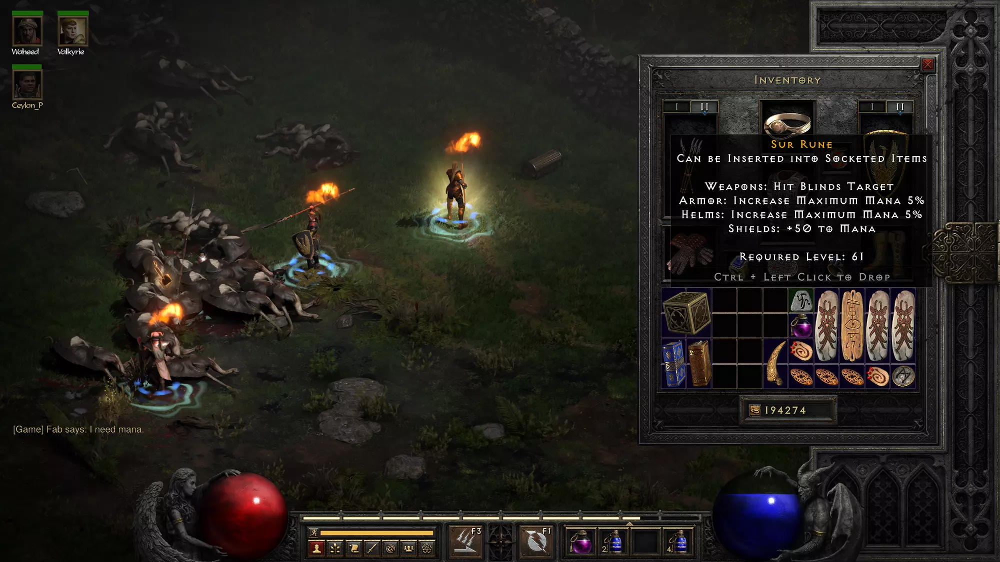
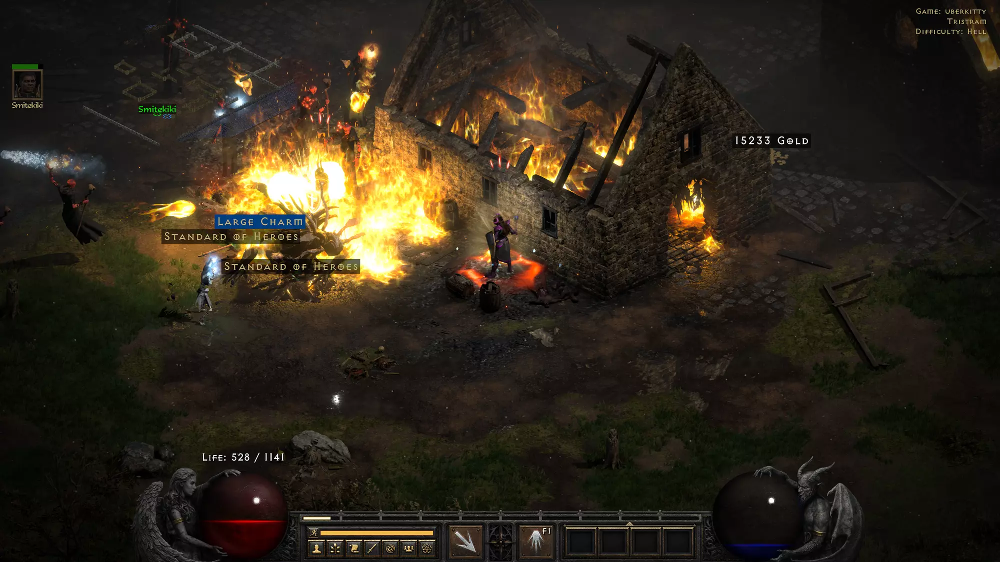

The last game I played extensively was "Diablo 2" during the year 2000 when Internet finally became affordable in France. I loved that it was a difficult game to master, I loved the mandatory grinding which made accomplishments meaningful. I loved to trade and the economy players invented.
Most importantly I loved the countless hours spent with my friends and brother, helping each other. When Blizzard released "Diablo II Resurrected" last year I knew immediately I wanted to go back. And I went all in.
To my delight, my wife expressed the desire to play. This created a need for a second PC in the house. The "Beautiful D2R Machine" project is the intertwined tales of building a PC during a pandemic and slaying monsters with my best friend.
The finished project
Having sworn off USB, I wanted to build something around Thunderbolt-3. The issues of my previous build, compounded by the DB4 chassis where opening the case required re-applying thermal paste to four panels, inspired me to use a Streacom BC 1.1 workbench.
Streacom BC 1.1. Both beautiful and useful.The workbench turned out to be a sound idea. The Beautiful Machine[1] was working well with an ASRock Phantom Gaming ITX TB-3 so I tried the same setup. The worse nightmare of a PC builder surfaced with random freezes. I tried everything. Updating the BIOS and all the drivers, using the exact RAM parts number found on the QVL, switching RAM, using only one RAM, monitoring temperatures of chipset, CPUs and GPUs, and even enabling/disabling innumerable poorly documented mobo settings. I was never able to figure it out and RMAed it.
I tried something beefier, the MSI Z590I ITX, advertised as a dual Thunderbolt-4 with Display Port pass-through video. One of the ports was Dead on Arrival and I never managed to make the pass-through work. Disillusioned, I ended up with a freeze free ASRock Z590 Phantom Gaming-ITX/TB4 with no support for pass-through.
At this point, I don't know what to do with desktop machines. USB is a mess and Thunderbolt motherboards either don't support video or have stability issues. If I had to redo it, I would buy a ThinkPad and use an external GPU or use a KVM monitor such as the BenQ PD2720U or the GigaByte M27Q.
The hardest part of building the PC in the sweet month of August 2021 was dealing with the worldwide GPU shortage. The perfect one for this job, the Nvidia 3060 Ti was sold out everywhere. It could be found on eBay for $1,300 which accounted for a 350% markup.
3060 Ti, sold out for the whole year 2021.All I could find was a kind co-worker willing to sell a ZOTAC 1080 Ti AMP Extreme. The thing was a beast weighting more than all other components combined (bench included). It was so massive that it stuck out the back.
La bete (the beast)It was not even going to be able to run D2R maxed out but it would be better than the 15fps of an Iris Xe.
Finding which mobo works. Also HUGE GPU!Fun fact: Working with a workbench means you have no "power on" button to start up the PC. The consensus way is to locate the PWR and GRD pins on the motherboard and short them with a screwdriver. Having the MacGyver song playing in the background helps to find the courage to do it. I confirm it works.
Eventually, I bought a PC Power Button ATX cable with a tiny button at the end so anybody could turn it on. You can see it on the photo in the lower left near the screwdrivers. It turns the mundane task of turning a PC on into a ceremony. I almost felt compelled to say "Ignition" before pressing it.
With a working, freeze free PC, it was time to put it in a case. I love Streacom design ever since I got a DB4. This time I went for the DA2. It was a back and forth between black and silver.
Streacom design at its finest.It was a joy to tinker with the workbench and it sped up experimentations considerably but it is a double edged sword if you lack experience. Catastrophe ensued when I tried to transfer the workbench build into the DA2. The case is clearly advertised as dual slots...and I had no idea they existed but the ZOTAC 1080 Ti AMP Extreme is a 2.5 slots! Even if I used a hammer, the GPU was not going to fit in.
By the time I ran into that issue, Diablo II Resurrected was released. I had a PC with no case and wires everywhere which took me back way before 2000. But it worked and we started playing with this setup, crossing fingers the cat would leave it alone.
I could have picked a bigger case but I really wanted something tiny. I tried several ways to find a GPU that would fit. I was on Best Buy website on the lookout for rare restock notices. I registered on all Discord groups I could find.
After a month of searching, I found a craiglist listing from someone who had scored two 3070 Ti in a sale and was willing to part away with the other for a 20% markup. I thought about it as a reasonable "finder fee" and accepted the deal.
Let me check if it works real-quick.I picked up a lightweight Intel Core i5 CPU since my understanding is that games are not CPU bound these days. The final list of components is as follows.
Fun fact: What do you do when you assemble the whole PC, move the case and see this tiny thing fall on the table?
It looks like a heat sink that would have somehow fallen from the component it was supposed to cool. A very tiny one (screw for scale). Can you guess where it came from?
Answer:
It was a magnetic screw cache! Ready for adventures!
On September 23, 2021 we logged in. And it was amazing. The HD graphics were even better than I remembered them. Which means they were MUCH MUCH better. The game features a "G" toggle to see the legacy renderer. I cannot believe I used to see this and enjoy it.
Yuck!Servers had a hard time to keep up. I was happy to see that Blizzard's gamble succeeded beyond their expectations and that many people still loved Diablo 2. On top of that the developers did an outstanding job of explaining[2] what was happening behind the scene which I appreciated.
Not as bad as it looks. Server issues were resolved pretty fastThe only real issue was the abscence of chat rooms. That was going to make trading difficult. Instead we relied on Discord's Chaos Sanctuary[3] vibrant community.
 The ladder has since launched!
The ladder has since launched!
I created the character I remembered enjoying the most, an Amazon, intending to make it into a bowazon. I already pictured cleaning the River of Flame with multishot Goldstrike. Vicky made a sorceress because she loved to be a caster in World of Warcraft.
Things went well for a while. We cruised through Normal and Nightmare difficulty. However as we were making progress, I started to notice the game had changed a lot. It was much more vast with new quests and a synergy system. Also both monsters and items had increased in power. This made it exciting since everything was new. It was also weird to find items that used to be good and realize they were now unremarkable. Here is a short selection of "heartbreaks".
Goldskin used to be good in Classic D2. Besides giving more gold to help gamble it provided a whooping "+35 all resistances". Also it made your character look like gold which was really cool.
In 2021 players would not even bother identifying an Unique Full Plate Mail.Bows, bowazon, and dual leech (life/mana) rings used to be all the rage. Probably the best build at the time. Goldstrike was not only good, it was beautiful to use since it came with a incessant "First of Heaven" on multishot with Wagnerian sound effects.
People believed in Goldstrike for two weeks in 2001 and then its value dropped to zero.In a game where bowazon was queen, the second best weapon was Eaglehorn.
Now completely worthless.The ultimate item, the one everybody was after used to be Windforce. The screenshot shows me trading one for a MAL rune, in an attempt to boost my amazon to an acceptable level in Hell.
MAL rune for Windforce. An insult for what used to be THE best item in D2.A powerful PvP build was the Nova sorceress with which the ultimate shield to yield was Stormshield. Thanks to Wizardspike[4] FCR, the goal was to teleport next to the opponent and Nova it into dust. I collected many PvP ears that way back in the days with the amount of modesty you would expect from a 20-something French kid.
| "PK" games were dedicated to PvP | "PK2" victory spree! |
|
|
|
| More carnage | Studying how to counter bowazon's guided arrow |
The one item I did not have the heart to leave on the ground was Arkaine's valor which is still a decent item. My amazon wore it with pride and it saved her many times against Nihlathak's infamous Claw Viper.
I was pleasantly surprised to see very few scamming attempts. Many people displayed remarkable ingenuity in order to steal your stuff back in the days.
2001 scammer attempting to take my (highly valuable at the time) Buriza-Do Kyanon.Above, the good old sleight of hand where a scammer cancels a trade and attempts to rush target into accepting the deal ("my mom called me") without rechecking the item. Originally performed with a ring to look like a Stone of Jordan, people became creative with Emerald socketed shako to pass as Harlequin Crest.
Hell difficulty was when the fun stopped. The bowazon had been severely nerfed and did not hold up to my memories. No bow was powerful enough and as a result Vicky's sorceress was carrying a dead weight.
In the old days that would have mean starting a new character from scratch. But the developers had the brilliant idea to allow (once per difficulty level) re-spec. That allowed me to renounce bows and embrace javelin by turning the bowazon into a javazon.
However we still had trouble making progress. Vicky found teleport farming stressful with a fragile one-shotable Sorceress and the javazon had no teleport. So we both created a second character. A sorc for me and, hail to the king, an Hammerdin for Vicky.
We got much better result with this configuration and started to find really cool stuff like University of Zakarum shield, two SUR runes and the main part of TAL RASHA set. The forge quest was also kind to Vicky with max drops.
Vicky's legendary luck at video-games, getting the best possible rune on the forge quest. University of Zakarum! SUR Rune #1 SUR Rune #2 Finding TAL RASHA armor Full TAL RASHA set. Notice the glow of a completed set.With a javazon, a sorceress and a hammerdrin, our team took off. We were able to farm the cow level and Mephisto both in Hell difficulty. It appeared that everybody's first character was a Sorceress. This made SPIRIT runeword in a Monarch a highly sought after item. Since we found many white monarchs while slaying cows we decided to process them and sell them.
A white Monarch about to be cubed to add sockets!We tried to cube them to add four sockets. Odds were 1:2 each time.
A successful 4 socket cubing. Odds of getting 4 sockets = 1:2! After cubing the Monarch goes to the runeword stage where it is repeatedly spirited until a good FCR is rolled. A perfect 35% FCR roll!At the end of the process, the SPIRIT Monarch was advertised in the WTS section on The Chaos Sanctuary channel. A four socket Monarch would go for a LEM while a perfect FCR roll easily fetched two IST.
Eventually the market for Spirit Monarch dwindled. We decided to pivot. I had memories of an unused Black Tower Key[5] asset which was never used in D2. Patch 1.10 found a cool way to give it a purpose. Three bosses, The Countess, The Summoner, and Nihlathak respectively drop the Key of Terror, the Key of Hate, and the Key of Destruction.
With three of each (a 3x3) players could open three portals leading to the most difficult area in the game. Defeating three bosses named Lilith, Uber Duriel, and Uber Izual gave three Diablo organs which when cubed opened a fourth portal to access Uber Tristram.
There a player would have to face Uber Diablo, Uber Baal, and Uber Mephisto at the same time. If victorious, a single torch granting amazing power would drop.
These quests were designed to be endgame difficult with monsters immune to all magic which were way beyond what we could achieve. Gathering the keys however, and selling them for runes (a 3x3 went for two Ist), was something we could do.
Our problem is that these bosses were either far down a dungeon or very hard to kill. The sorceress could teleport fast enough but the all mighty Hammerdin was too slow. The solution was to cube our two Sur into a BER and invests all our savings into a JAH. With that we made the legendary teleport-granting armor, ENIGMA.
Cubing our two SUR into a BER was an exhilarating moment.Diablo 2 is unforgiving in many aspects but especially when it comes to runewords. The base has to be the right kind. It must have the exact number of sockets. And you must insert the runes in the exact order. That is part of the thrill but there were many horror stories circulating, with screenshots, that made the process unsettling.
The horror. Also saw a JahIstBerWe must have checked the recipe ten times. Dry run the order and made sure the armor had three sockets. These three runes were all our saving and there was no way to recover if something went wrong.
 Holding our breath.
Holding our breath.
Thankfully, everything went well. We now had the perfect keys harvesting team.
What many players consider the endgame armor, ENIGMA.With two teleport capable characters we were able to check all three key sources in a game within two minutes. Vicky learned the three types of Halls of Vaught layout by heart. She was an unstoppable Nilhatak hunter able to do runs in 25 secs.
Two cats working Nilhatak for a DKey.Nilhatak was considered by some to be the most difficult boss to kill. Surrounded by a horde of minions, he is a powerful necromancer able to cast devastating corpse explosion which he does generously, targeting his fallen lackeys. This effectively creates an almost impenetrable barrier around him.
For this reason, Destruction keys were initially worth more than Terror of Hatred. In practice, corpse explosion could be voided by wearing NATURE'S PEACE ring and, had we thought of it, equipping Tyrael's Might on our merc to provide "Slain Monsters Rest in Peace".
Gathering keys with two players in a game and in a party greatly increased the odds of having a key drop. They were not exactly raining on us but our team of two got more of them than players gathering solo.
Party Size Destruction Key Hate Key Terror Key
========================================================================
1 1:12 1:11 1:12
2 1: 9 1: 8 1: 9
3 1: 8 1: 7 1: 8
4 1: 8 1: 7 1: 8
5 1: 8 1: 7 1: 8
6 1: 8 1: 7 1: 8
7 1: 8 1: 7 1: 8
8 1: 8 1: 7 1: 8
Odds of a key drop in function of party size.
We ran keys so much that we witness rare occurrences of double drop keys. With a 1:60 chance of occurring per key drop, I dare not do the math of how many games we ended up running together.
Double Key of Destruction drop! Double Key of Hate drop! Double Key of Terror drop!Once gathered, key set were sold for runes as 3x3 or 6x3.
Vex for a 6x3.Grinding to collect keys was repetitive and we became tired of it fast. On top of that we noticed that people who bought keys from us went to Uber Tristram, collected the torch and re-sold them with a markup. Rinse, Repeat. The harder time they had selling their torches, the cheaper they were trying to buy our keys.
In a Daniel Plainview moment, we decided to cut the middle-man and made the decision to harvest our own keys and convert them into torches to sell them ourselves!
Vicky created a third character, another paladin, and we invested all our savings into making it an Uber-specialized Smiter.
Our first attempt nearly failed. Failing an Uber Tristam is particularly unappealing since you spend nine keys to open portals and get nothing in return.
Our plan was for the Sorc to support Vicky's Smiter which would wield a budget Heaven's light and wear a Smoke armor with a procced Treachery.
Collecting organs from Lilith, Uber Duriel, and Uber Izual went ok although we had to tip our hat to Lilith for being a fear inspiring opponent able to one shot us.
But Mephiso in Uber Tristam kicked our ass beyond belief. We almost compromised the only portal when he started to camp next to it and instant kill us upon entry. The sorceress made a hero jump followed by teleport to attract Mephisto away and allow us to land.
We had badly underestimated the difficulty and quickly ran out of Full rejuv potions. We were ready to give up after 20mn of non-stop battling and dying. In despair, I left the game and offered a gross amount of rune for 40 full rejuv on the Discord channel, hoping to get a fast response. It was a dangerous move since the game crashed often. Had Vicky crashed while my character was away, we could have lost it all as it happened to Wudijo in a now infamous stream[6].
To my amazement someone showed up instantly. I will never forget the character name who entered the game, "rejuv".
Rejuv saved our first Uber attemptI brought back the 40 full rejuv and became a cheerleader. To my relief, Vicky managed to attract Mephisto far from its minions and slayed him.
Baal and Diablo remained. It was an impressive sight to see Vicky's smiter disappear under a rain of fire. Surrounded by two Uber bosses, mage skeletons and demons, there was no retreat possible. The only way out was to keep on fighting and hoping life tap and life leech would keep up with the damage received.
The hero disappears under a rain of fire, and a sea of monsters. No retreat is possible.After much smiting, Vicky emerged from a pile of burning enemies holding an Unidentified Unique Charm and two Standard of Heroes. We had achieved the ultimate Diablo 2: Resurrected challenge and got a torch!
Our first Uber Tristam.We ended up visiting Uber Tristam more than thirty times and came back every time with a torch. It was a lot of fun. Now we were the ones buying keys and selling torches. But we were not finished.
Buying keys now. It is the cycle of life.Quality of our equipment kept on improving. We made a second smiter to stake Concentration and Fanatism aura. We gave them both Grief to cut through Mephisto like butter. We made Chain Of Honor and we did not even need to proc Treachery anymore. We made Call To Arms so our life total would sky rocket.
Despite all our gears, Lilith never stopped being intimidating. She always managed to kill us every once in a while which was pretty cool. This is a good design decision from the developers to have crafted an opponent that cannot be completely tamed even with the best equipment. I like the idea of a beast commanding respect from players well into their endgame.
Chain Of Honor, probably the best armor to emerge victorious out of Uber Tristam. Fighting all three Uber bosses simultaneously.We became really good at collecting torches. Compounded by Vicky's luck allowing her to identify any torch into the most in demand (sorc and paladin) we became rune gazillionaires. And since we liked doing it so much, we offered Uber Tristam services for free[7].
Helping people without asking anything in return was perhaps the most enjoyable part of our D2R career. People were reluctant at first, fearing for the torch to be stolen but the Discord vouching system helped to clear out doubts. The first person we helped was named BlizzSorc. I will never forget the torch we got her since it was a perfect 20/20 Sorc.
Perfect 20/20 storch!We also helped people to recover from botched Uber Tristam. Even a portal clogged with the three bosses was not a problem. At this point, our gears had become so good we could jump in and cut through anything.
A botched Uber Tristam recovery. Mephisto and Baal camped on the entrance. Successful recovery in a four players game!Over time, our reputation grew and players asked us to batch gather torches for a fee. I could not believe my eyes when one of them dropped 15x3 = 45 keys on the floor. I thought maybe they had found a way to duplicate them. However they refused to pay fees with Destruction keys because they had a hard time to get them. This dissipated our doubts and we took the contract at a rate of 2 keys per torch retrieval.
Hurry up to pick them up, they disappear after a while. 1 key ≈ 1 hour of somebody's time. Work as usual Job done, 5 unidentified torches. The player proceeded to drop another 45 keys on the floor.One thing we never got to do was slay Diablo clone. Installing software to track IP address of the server was too unappealing. The other thing we never did was drop an unique Shako, the much desired Harlequin Crest. We stopped taking screenshots of rare ones after a while.
Dang! Dang!! This game hates us.Vicky and I took part in so many fun adventures and enjoyed the game more than we projected.
The most memorable part of Diablo II: Resurrected were the interactions with the other players. Helping each others[8], trying to grab the loot, negotiating prices during trade confirmed Diablo II as a legendary title and a timeless concept.
It also made me reflect about Diablo III and how I felt about it. While it was a fun game, I found it too safe to be enjoyable. Players have separate loot, loots always matching their character class, items bound to the account, and no trading. People were siloed, making it a game played side by side, not together.
Maybe this is what people want nowadays. Maybe Diablo 2 difficulty and savageness belong to another era. Regardless of where the franchise goes, thanks to the developers who worked hard to bring back this great game to my life. We had a blast.
{kind=link}